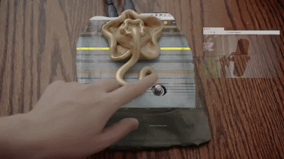
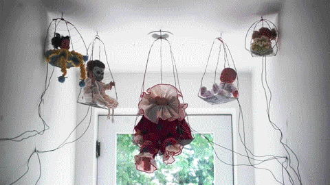
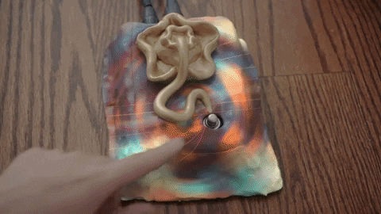
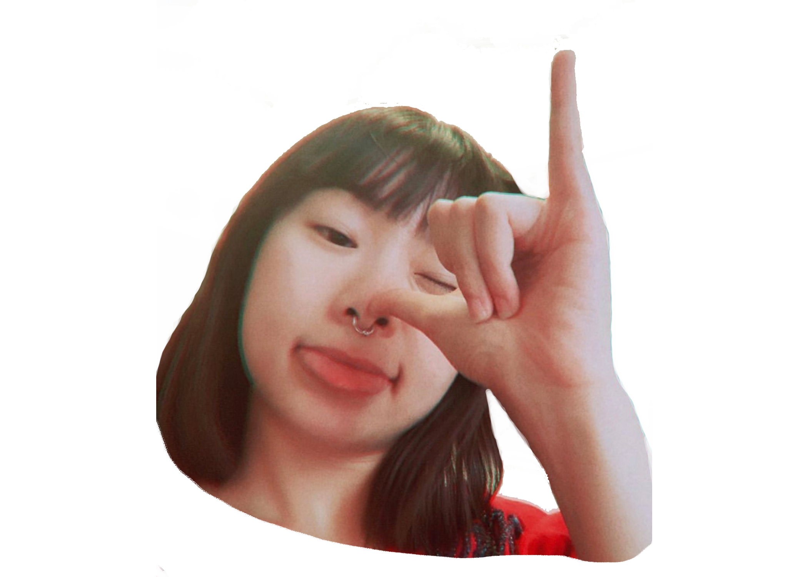

sound

shows

multi-media

music video

bio

contact
"To solve a puzzle with another puzzle that can't be seen, be touched, but to feel."
Awards & Honors (Selected)
2022 Fear Faire Film Festival - Official Selection - Un deciphered
2020 International Sound and Film Music Festival - Official Selection - Shaoxing Nomad
2019 Paris Lift-Off - Official Selection - Shaoxing Nomad
2018 Rome Prisma Film Award - Semi-finalist - Shaoxing Nomad
2018 Independent Talent International Film Festival - Finalist - Shaoxing Nomad
2018 Istanbul Internationla Experimental Film Festival - Official Selection - Shaoxing Nomad
2018 AMII Work Fest - Award Winner of Best Sound - Therapy Room
2018 American Track Music Award 2018 - Award Winner of Best Independent Artist - Dent - So Red
2018 Global Music Award 2018 - Award Winner Bronze Prize of Best Female Vocal - Dent - Sorrowful Seed
2018 Logcinema Music Film Festival 2018 - Award Winner of Best Original Song - Sorrowful Seed
Global Music Award 2018 - Award Winner of Best Lyric/Songwriting - So Red
2017 ReAnima Animated International Film Festival 2017 - Best Music Video - Sorrowful Seed
2017 Aug. LINOLEUM Festival - Official Selection - Therapy Room
2017 Jan. Seoul International Cartoon & Animation - Official Competition - Sorrowful Seed
2017 Jan. Berlin World International Film Festival/ ACT HRFF - Official Selection - Dystopia Rooms
2016 Song Of The Year- Semi-Finalist- Dent
2016 Dec. VOID - International Animation Film Festival, Copenhagen - Official Selection - Therapy Rooms
2016 Dec. Berlin World International Film Festival - Official Selection - Dystopia Rooms
2016 Nov. Barcelona Planet Film Festival - Official Selection - Therapy Room + Dystopia Rooms
2016 Sep. Hollywood International Moving Picture Film Festival - Award Winner- Dystopia Rooms
2016 Feb. Holland Animation Film Festival(HAFF) - HAFFTube - Official Selection - First Breath
2016 March. Laurie Anderson Award Women in Music Technology Award- Berklee College of Music Electronic
Production& Design Achievement Awards Spring 2016
2015 March. Laurie Anderson Award Women in Music Technology Award- Berklee College of Music Electronic
Production& Design Achievement Awards Spring 2015
2005 Oct. Certificate Grade 8 (top 9) Specialty Pianist - Arts Grade Examination of China
2002 May. Hualian—Coca Cola Piano Contest First Prize-State Host China
* Un deciphered, Shaoxing Nomad film and sound by Lane Shi Otayonii.
First Breath, Dystopis Rooms, Therapy Room film by Qieer Wang, sound by Lane Shi Otayonii.
Selected Press
Exhibitions
2017 Oct. Sound Artist for OFF-OF, Biggercode Gallery, Soho, NY
2017 May. Voice on Whether There Was a Bell or Whether I knocked exhibition by Stephen Vitiello at ICA,Virginia Commonwealth University
2018 July. Sound for New York CrowdArt Daydreaming exhibition, 798 Art Zone, Beijing, China
2019 Automaton Alive performance show, Chameleon Gallery on canal, NY
2019 Automaton Alive solo performance show, Wonderville, NY
2019 Sound artist, performer for He Said I Thought, by Carol Szymanski Signs and Symbols, NY
2019 Invited performer for Carol Szymanski + Barry Schwabsky + Joan Jonas joint book launch, Bar Laika(e-flux), NY
2020 May. Floating online group exhibition, showing Memory Device
2020 December. Who’s Not Broken?, StudioGallery Project Space, Shanghai
2021 May. MíngMíng: Heart Cruise, Tank Arts Center, Shanghai
2021 July. Extro-Language World II, Fanrong. Museum, Suzhou
2021 Aug. Rituals in Rituals of the Future, Himalayas Museum, Shanghai
2021 Sep. Sound Artist for The Ground Is Falling Exhibition by Xin LIU, Aranya Art Center,
Qinghuangdao 2021 Nov. Unwrap, Ming Contemporary Art Museum, Shanghai
soundssoj
showssss
A Returning of A One that Must be Loved
2015 - ?
a hide and seek game longing for healing, and a journey home
How do you find these paintings?
Follow the steps of the game and....Good Luck ;)
1.Listen to the guidance of the song, the closer it gets to the country, the louder/clearer the song is.
Enter the possible country names in the boxes below the world map (total of 8),
if you guess right, you will then locate the cities next.
2.Listen to the guidance of the sound, the closer it gets to the cities, the louder/clearer the sound is.
Enter the possible city names in the boxes below the country map (total of 8),
if you guess right, you will get the address of the painting(s).
3.Now you have the actual address(es)! The paintings are waiting.
Bon voyage, may it be one that sparks the light from the shallows.
to be continued...
mvmvmvmmvmv
connnnnnnntact